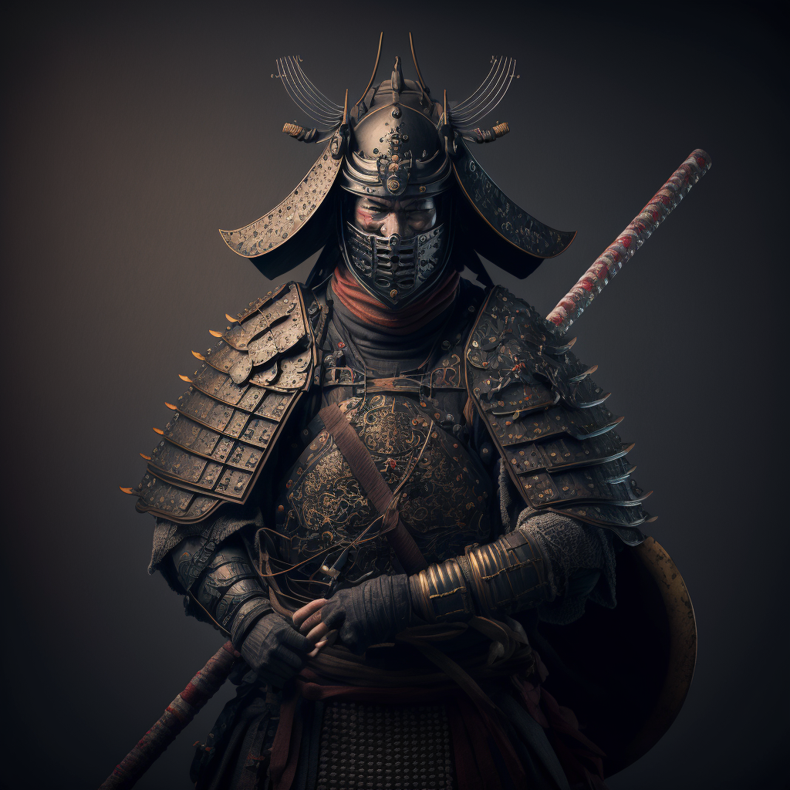
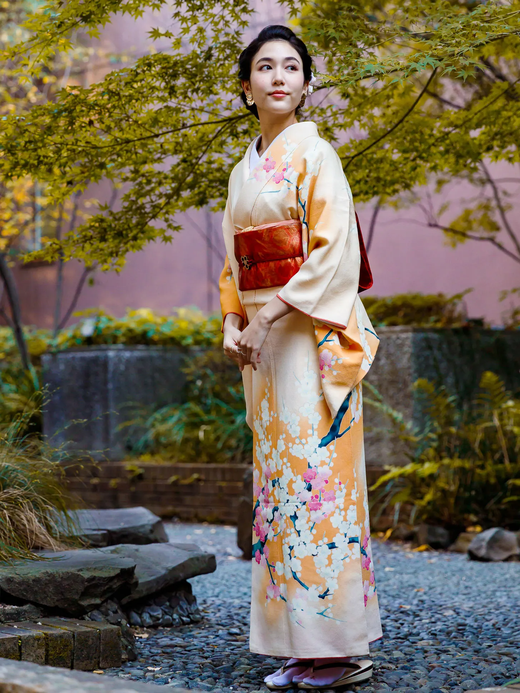
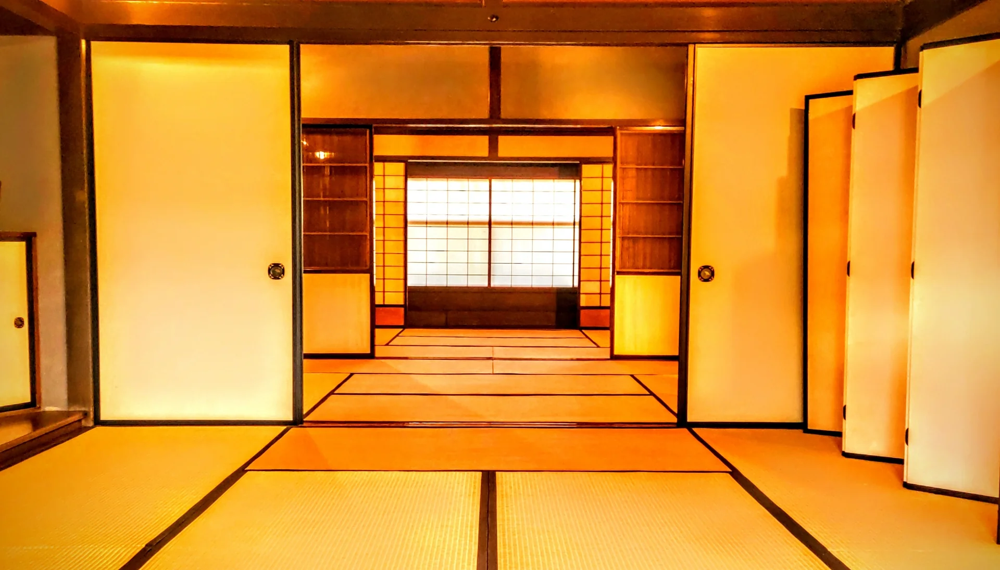
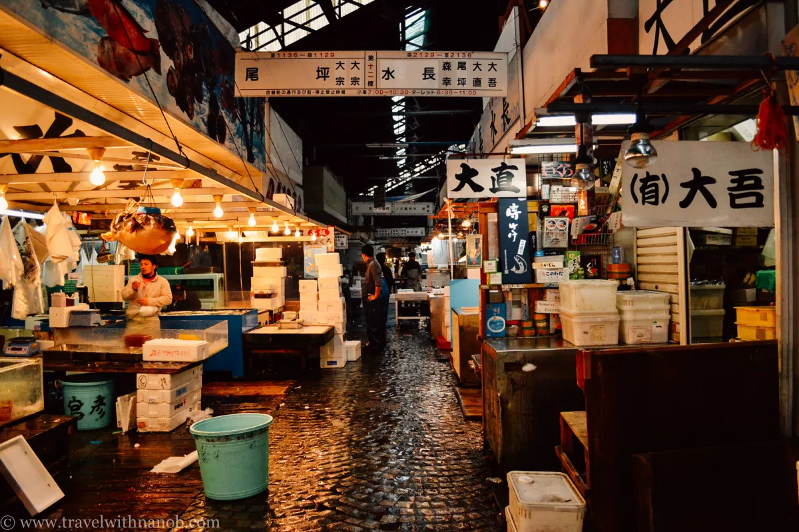
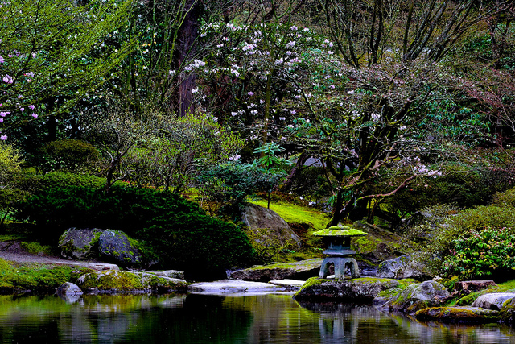

Japan's cherry blossoms, or sakura, are known around the world for their beauty and significance in Japanese culture. They typically bloom in spring, attracting millions of visitors each year.
Mount Fuji is Japan's highest peak and an iconic symbol of the country. It is an active volcano and a UNESCO World Heritage site, attracting climbers and tourists from all over the world.
The islands were originally attached to the eastern coast of Asia, until tectonic activity caused them to split off, creating the Sea of Japan around 15 million years ago.
Instead of ordering sentences by subject-verb-object (example: I write words), Japanese uses subject-object-verb (example: I words write).
Once considered heavenly creatures, the deer are now classified as a national treasure (though some are being culled for destroying plant life), and can be seen bowing to tourists in exchange for crackers that are sold on site.
A samurai essentially had a license to kill, with the authority to strike down any commoner who compromised their honor. Ritual suicide (known as seppuku) was a respected practice for a samurai who brought dishonor to his lord.
Japanese people work hard to perfect it. The depth of the bow is significant—lower bows indicate more respect.
It consists of a long robe-like dress that is wrapped around the body, with the left side always covering the right. The obi is the belt that keeps the kimono secure. A single kimono can cost over $10,000.
Known for their elaborate hairstyles and white makeup, geisha were considered symbols of beauty and grace. The white powder covers most of the geisha’s face and neck, though unpainted spaces creating a W shape are usually left on the neck, which is considered alluring.
A mat’s length is always twice its width, and its size is standardized depending on the region. For that reason, room size is often indicated by the number of mats needed to cover the space.

The Nagano Prefecture is known for its macaques, who bathe in hot springs in the winter.
The market employs over 60,000 people and opens at 3:00 am most mornings, with its famous wholesale tuna auctions beginning at five.
The motto for the Games is “Discover Tokyo,” and the mascot—chosen by Japanese schoolchildren—is a blue and white superhero who has the power to teleport.
“Borrowed scenery” is an important element in garden design; it means the garden’s landscape includes elements from outside its boundaries, such as mountains, to form a backdrop.
